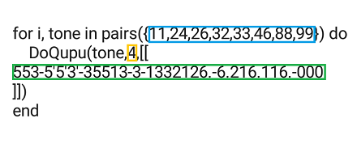

下面演示一段简单旋律
这是一段由Lua编程语言和简谱标记语言组成的代码，整段代码的意思是分别以不同乐器以四分音演奏一段简谱。
如果你看不懂这段代码可以仅改动框线画出的部分，快速开始尝试：
| {{ysb.t}} | |
| {{ysb.h.code}} | {{ysb.h.name}} |
| {{g.gt}} | |
| {{gi.code}} | {{gi.name}} |
一个音符(音调)由1-7的数字、井号#(读sharp)、单引号'（半角）、点号. （半角）组成，数字是必须项，其他非必须，多个音符直接连载一起写即可。
Lua 是一种简单、轻巧、自然的编程语言，广泛应用于游戏、硬件编程等领域，这里也引入lua编程语言，为的是处理重复工作，以更加灵活地创作。
如果你不了解或者不想了解lua也没有关系，你可以按照“快速上手”提供的范式修改创作即可。
要想了解更多lua知识可以去搜索学习。
视频课程还在准备中，可关注抖音“子禾学长”（抖音号：ziheno1），后续会直播讲解如何创作以及后台审核作品的过程，指出大家作品中的问题并做解答。
每晚9:00-9:30 B站直播回答问题，有问题这个时间B站搜索“子禾学长”来直播间提问。